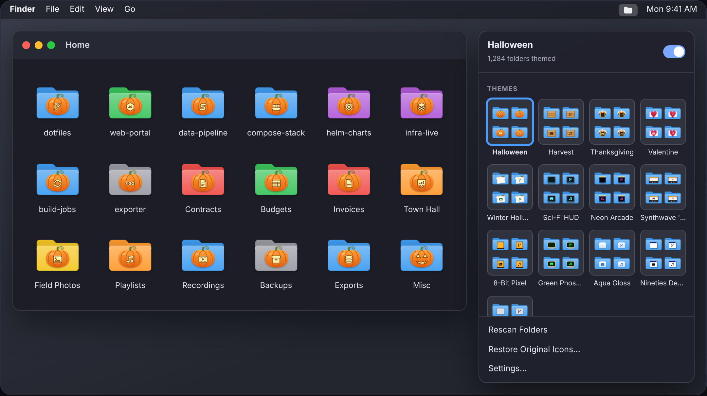
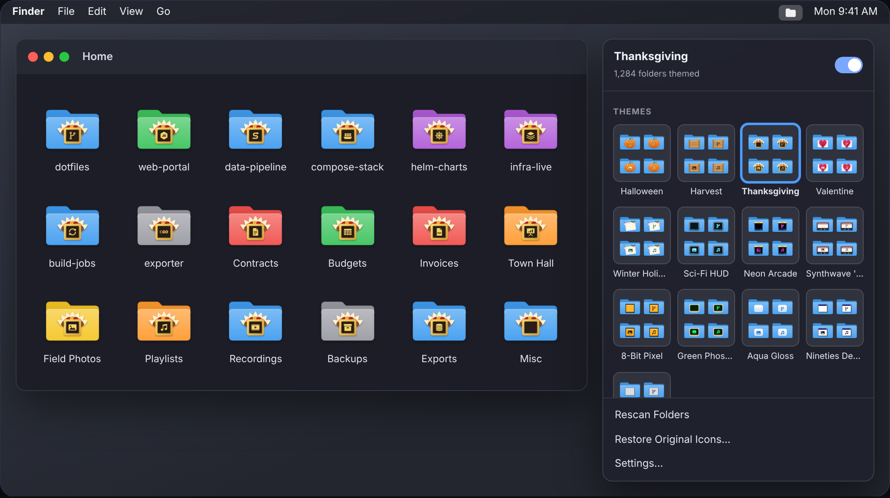
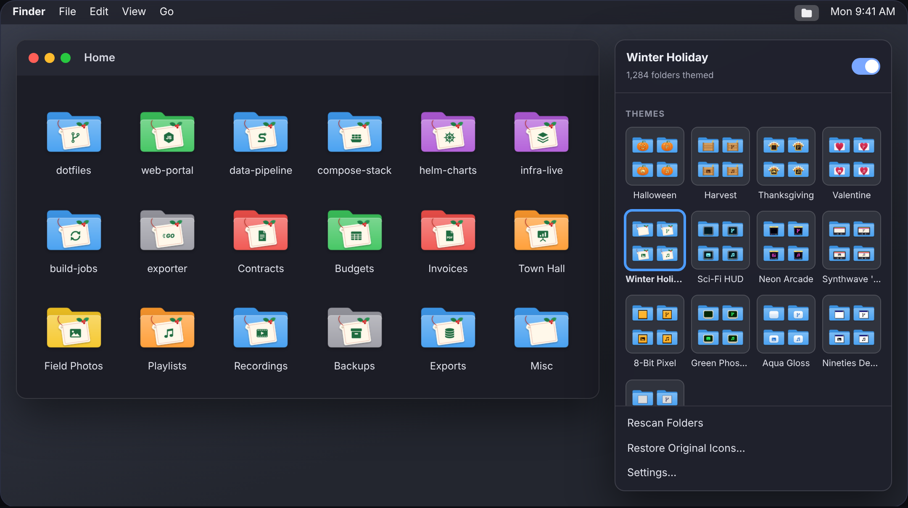
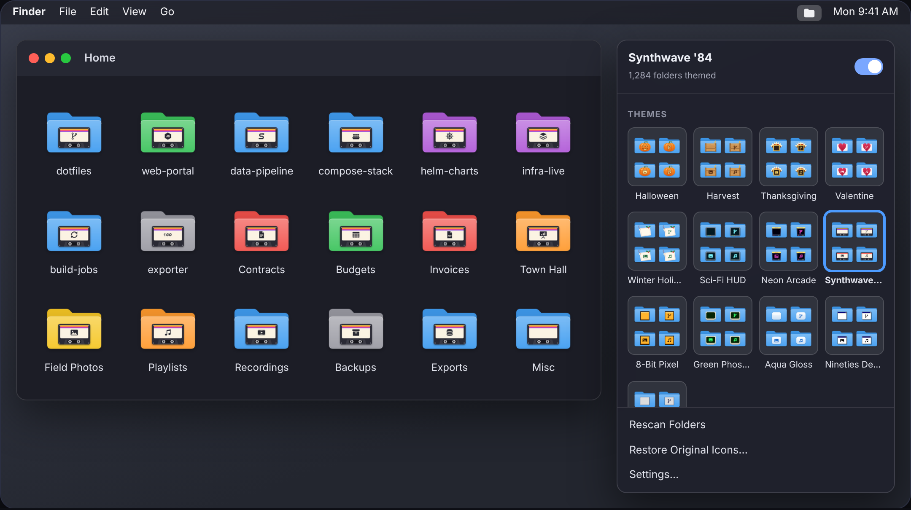

HyperIcon is a macOS menu bar utility that looks inside each Finder folder, gives it a matching icon, and lets you restyle every one of them with a single click. The folder colour stays yours: set it with a Finder tag.
Free and open source · macOS 14 or later · Apple silicon and Intel · Signed and notarized
This preview is live. Pick a theme in the panel and every folder changes. Folder colours here come from Finder tags, just as on your Mac.
How it works
You never assign an icon. HyperIcon reads what each folder holds and keeps its icon up to date as the contents change.
01 · DETECT
A .git folder, a package.json, a Dockerfile, a Helm chart or Terraform files identify a project immediately.
02 · WEIGH
When more than half of a folder's files are PDFs, photos, spreadsheets or music, that is the icon it gets.
03 · WATCH
Drop new files in or start a repository and the icon follows within seconds. No rescans, no fuss.
Your colours
A theme never recolours your folders. HyperIcon draws each one in the colour of its Finder tag, so right-click a folder, choose a tag colour, and its icon follows within seconds. Untagged folders stay the familiar macOS blue.
Choose a tag colour to see the folder change.
Themes
Each theme adds its own artwork to the folder: a carved pumpkin, a gift tag, a cassette tape, an arcade screen. The symbol on it tells you what is inside, and the folder keeps the colour you gave it. Every theme covers all 27 folder types. Select one to try it on this page.
In the menu bar
HyperIcon lives in the menu bar with no Dock icon. Open it to switch themes, pause, or put everything back.




Fully reversible
# From the menu bar: Restore Original Icons… # or from Terminal: /Applications/HyperIcon.app/Contents/MacOS/HyperIcon restore # App already gone? Use the standalone script: bash restore-icons.sh
Install
Questions
Folders in your home folder, four levels deep by default. It skips Library, hidden folders, application bundles and dependency folders such as node_modules. You can change the depth and exclude any folder in Settings.
No. A repository gets one icon on its top folder and nothing inside it is touched. HyperIcon also adds the hidden icon file to that repository's local .git/info/exclude, so it never appears in git status. That line is removed when you restore.
No. HyperIcon only reads file names on your Mac to choose an icon. It makes no network requests at all.
Yes. A theme is a folder of PNG files and a small theme.json. The theme guide explains the format.
Right-click the folder in Finder and choose a tag colour, or add a tag in Get Info. HyperIcon redraws the icon in that colour. Folders without a coloured tag are blue. The custom colour from macOS 26's Customize Folder is not used, only tag colours.
Choose Restore Original Icons from the menu, quit HyperIcon, and move it to the Trash.